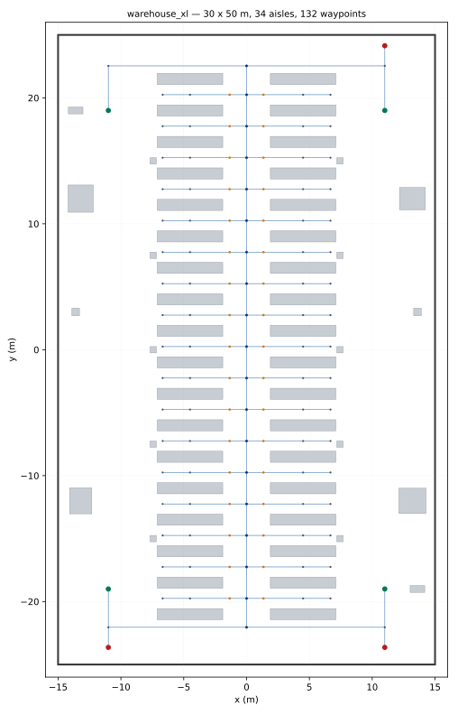
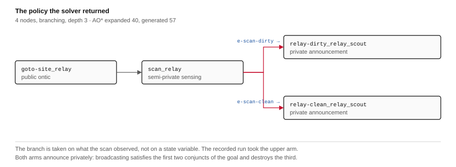
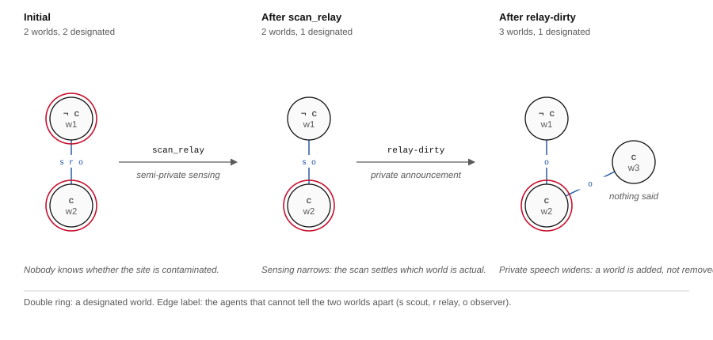

Open-RMF · 42 × 63 m · TurtleBot3 · ROS 2
This demo evaluates the execution of an epistemic policy at warehouse scale. It does not claim that increasing floor area increases epistemic planning complexity. The policy is the survey of eplansys, unchanged: four nodes, AO* to depth 3, forty expansions, two designated worlds, the same here as on the fourteen-by-twenty-one metre floor. What changed is the floor, the navigation graph derived from it, and the execution over Open-RMF.
Floor size and policy size are independent, so enlarging the warehouse from 296 to 2 640 square metres says nothing about the difficulty of the planning problem. What it does change is what execution has to survive: the sensing action stops being free, the site stops being somewhere the robot already is, and the properties the policy was chosen for have to hold across thirty metres of contested floor. The companion work on nested goals varies modal depth; this varies the ground the fleet has to cross, and reports what broke.
The epistemic content is in the execution and not in the search. The outcome the policy branches on is read off the robot's laser during the run, and the same binary over two worlds differing by one pallet publishes two different outcomes and takes two different branches. The step from ignorance to knowledge is carried by perception, and the negative conjunct, that one agent must not come to know, is checked against the model and against the fleet's own radio transcripts.
Two disclaimers stated at the top because they bound everything below. The nine walking figures are scenery: absent from the navigation graph, unperceived, unavoided. The private channel is topic addressing: the observer was not addressed on it, which is not the same as being unable to listen.
Floor from dynamic_logistics_warehouse; graph and building map derived from its geometry in warehouse_xl_rmf_demo. Policy from eplansys, dispatched by eplansys-rmf. Full account in Epistemic Planning on a Warehouse Floor at Scale (PDF, 11 pp).
The floor
Open-RMF routes over a navigation graph and a building map, and its demonstrations distribute both. The largest of those are the airport terminal, at 279 × 60 m with 92 named waypoints, and a campus at 319 × 246 m. Neither is a warehouse. No large warehouse map is published for Open-RMF at all, and the assets from which one might be assembled were therefore measured individually. What is measured is the collision mesh, not the catalogue entry.
The distinction matters more than it may appear. A Gazebo model carries two independent descriptions of its geometry: a visual mesh, which is what a rendering shows, and a collision mesh, which is what a laser returns and what an occupancy grid is rasterised from. Nothing requires the two to agree, and for the assets in question they do not.
| Asset | Footprint | Collision geometry | Consequence |
|---|---|---|---|
| OpenRobotics/Depot | 29 × 15 m | A ground plane | Racks and walls exist as visuals alone. A laser passes through them; a floor plan rasterised from collision geometry returns an empty hall. |
| OpenRobotics/Warehouse | 30 × 50 m | Shell and pillars | Genuinely large and genuinely empty: 1.2 % occupied at robot height, all of it structural columns. |
| industrial-warehouse | = AWS small | Complete | The AWS small warehouse recomposed from the same components; no larger than the floor already in service. |
Depot is the asset ordinarily selected for this purpose, at some fifty thousand downloads, and is the least serviceable of the three. Its detail is entirely superficial, and the defect is undetectable from any rendering.
An earlier iteration of this work composed a floor from OpenRobotics/Warehouse as the building shell and AWS RoboMaker's shelving as its contents, arranged parametrically. That construction is superseded and is recorded here only because its abandonment is informative: a floor whose every dimension is chosen by its author is a floor on which no property of the execution layer is genuinely tested, any difficulty it presents can be designed away.
The floor now in use is dynamic_logistics_warehouse: AWS RoboMaker's small warehouse tiled and furnished by hand. Measured from its own model poses it comprises
| Property | Value |
|---|---|
| Extent | 42.0 × 62.8 m — 2 640 m² |
| Floor slabs | 9 |
| Obstacles | 153, drawn from 14 AWS assets |
| Longest rack | 18.05 m (ShelfF, six of them) |
| Scripted actors | 9, on fixed circuits |
| Occupied at robot height | 42 % |
Against the 296 m² of the small warehouse this is an increase of approximately nine times in area. It is also, and more consequentially, irregular: nothing about the placement of 153 hand-set obstacles admits a closed form, so the navigation graph cannot be written from a formula and must instead be recovered from the world.
The asset is distributed under GPL-2.0 while this repository is Apache-2.0. Its own package.xml declares Apache 2.0, which the repository contents contradict. It is therefore fetched at setup and not vendored. The more restrictive of the two declarations is assumed.
The roadmap
The derivation proceeds in four stages, each of which failed at least once before it held.

These two requirements are in opposition, and the resolution satisfying either violates the other. Six of the racks are eighteen metres in length, so the floor is traversed by walls admitting few apertures. A lattice coarse enough to route on fails to discover them.
| Spacing | Free nodes | Largest component | Outcome |
|---|---|---|---|
| 2.00 m | 295 | 147 (50 %) | Floor divides into three disjoint bands |
| 1.50 m | 541 | 447 (83 %) | Still disconnected |
| 1.25 m | 748 | 748 (100 %) | Connected; planner intractable |
| 1.00 m | 1205 | 1205 (100 %) | Connected; larger again |
| 1.25 m, thinned | 261 | 261 (100 %) | Connected and routable |
A second mechanism compounds the failure at two metres. A largest-component filter is applied, and correctly so: an isolated pocket of floor yields waypoints RMF will accept and never route to, which fails at dispatch, not at generation. Each step is individually defensible; in composition they discard two thirds of the warehouse and emit no diagnostic. The failure is silent, and silence is the property that makes it expensive.
At the opposite extreme, 748 waypoints and 2200 lanes are connected and unusable: RMF returned no path for a sixty-metre errand within seventy seconds. The thinning reconciles the two. A node is removed whenever every pair of its neighbours admits a direct unobstructed join, which preserves every route and costs one waypoint; junctions and aisle waypoints are retained. The generalisation matters: restricted to nodes of degree two, the same procedure removes 55 of 748, since in open floor a lattice node has degree four.
A waypoint is classified as an aisle when the floor terminates within 1.5 m on both sides along one axis and remains open along the other. This is precisely the configuration a robot must enter before it can determine anything about its contents, and therefore precisely what a sensing action requires a name for. Thirty-five such waypoints survive a four-metre minimum separation: one per aisle, not one per cell. The unseparated criterion admitted 174 and left the thinning nothing to remove.
The resulting graph is 261 waypoints, 35 of them aisles, three chargers and 1652 directed lanes, in a single connected component.
Superseded. These figures are derived from the poses the world's models declare, and Gazebo does not use those: the world carries a saved <state> block, applied at load, and fourteen of its poses disagree with the declaration — by 0.19 m for one floor slab, by 49.8 m for another, and by 149 m for a prop the declaration puts inside the building. Read from the poses actually loaded, the floor gives 155 obstacles, 289 waypoints and 1870 directed lanes, and every charger moves. The correction, and what it cost, is in Knowing which, and knowing about a place nobody went.
Result
Eight defects were encountered in bringing the chain into operation at this scale. With the lattice measurement above they are what this page has to report: six are properties of the composition, not errors within any component, and none would have been exposed by a unit test. The epistemic content, set out further down, is the same content the small floor exercised.
| Symptom | Cause | Class |
|---|---|---|
| No robot moves; the fleet manager is absent | The packaged fastapi is 0.63, written against pydantic 1; a pydantic 2 in ~/.local shadows it for every interpreter on the machine | Environment |
| A robot leaves its charger, halts after 1.3 m, RMF reports the task underway | A pallet jack placed for appearance overlapped the charger's own lane by 20 cm; the lane check knew of racks and pillars but not of props | Composition |
| The warehouse is a third of its extent | A 12 cm seam between floor slabs reads as absent floor and divides the map, of which the component filter retains one part | Geometric |
| No path returned for a 60 m errand in 70 s | 693 waypoints and 2200 lanes; the lattice required for connectivity is not the roadmap that should be routed upon | Scale |
| Robots report a pose, accept paths, do not move | Spawned at z = 0 into slabs 12 cm thick with no ground plane beneath; each settled at z = −0.067 with its wheels within the floor | Geometric |
| A purpose-built TurtleBot3 loads, initialises, publishes state, does not move | slotcar requires more of a model than it documents | Undocumented interface |
| The robot is 271 m across; or, separately, a 2 m cube | turtlebot3 meshes are STL in millimetres, and the .dae files beside them are placeholders | Units |
| goto_site fails with RMF task timed out | The 180 s limit is the small floor's figure; forty metres at half a metre per second is not 180 s | Scale |
The pallet jack. The lane check was written to refuse lanes crossing obstacles, and it did refuse three layouts which appeared correct. It admitted this one because its obstacle set comprised racks and pillars: the prop had been placed in the world generator, for appearance, and the checker never saw it. The symptom was disproportionate to the cause: a robot held motionless against a pallet jack while RMF reported its task underway and no component reported a collision. The correction moves props into the definition the checker consults, and the check which admitted the placement now refuses it.
The seam. Twelve centimetres between two floor tiles is invisible in any rendering and fatal to a rasteriser, which cannot distinguish a seam from a void. Its interest lies in the interaction: the largest-component filter is correct in isolation, and the two together discard two thirds of a warehouse without diagnostic.
The model that would not move. A Waffle constructed to slotcar's documented requirements — a base_footprint, two wheel links, two named revolute joints — loaded, initialised, published state at 6 Hz, accepted paths, and remained stationary. TinyRobot crossed the same floor on the same graph without difficulty, which is what isolated the model from the world and the roadmap. The resolution retains the working skeleton and substitutes only what is seen, which is an admission that the interface was not understood so much as circumvented.
The recurring form is this: each component behaves as specified, the composition does not, and the failure presents as silence, not as an error. A robot pressed against a pallet jack reports its task underway. A warehouse reduced to a third of itself reports a valid graph. A model which cannot be driven reports its state at 6 Hz. In a system of autonomous nodes, plugins loaded at run time and streams advancing at different rates, integration is the only instrument which exhibits this class of fault, The absence of a diagnostic is its signature, not an indication of health.
The run
Gazebo on the left, the Open-RMF traffic schedule on the right. Caption times are read from the mission's own log and offset against the frame the capture opened on, so a caption saying the robot sensed something appears at the frame in which it did.
| t | Event | Layer |
|---|---|---|
| −16.9 s | goto-site_relay dispatched. The scout is crossing the floor before the recording opens | Bridge → RMF |
| +14.9 s | scan_relay dispatched to scan_site in aisle_07 | Bridge → RMF |
| +22.8 s | Third consecutive fleet report inside the site, 0.35 m from it. Nearest finite return 0.32 m | Laser → perception |
| +24.2 s | e-scan-dirty published, then applied: 2 worlds, 1 designated | Perception → epistemic state |
| +26.5 s | relay says e-scan-dirty on /eplansys/channel/private/scout; 3 worlds, 1 designated | Speech act |
| +29.3 s | Mission complete | Executor |
| +30.0 s | Three formulas and two transcripts checked against the state the fleet left behind | Post-execution check |
The observation is sensed, not asserted. The scout carries a planar laser on its mast at 0.33 m, 180 beams over the full turn, returns admitted between 0.12 and 3.5 m. A perception node subscribes to /scan and to /fleet_states and withholds any verdict until the fleet has placed the robot within 0.40 m of the site on three consecutive reports. Only then does it read the nearest finite return, compare it against a 0.70 m threshold, and publish e-scan-dirty or e-scan-clean. The bridge takes that value and the product update follows it. The epistemic state was updated from an observation generated by the robot's onboard perception during execution.
The log for the recorded run reads at the site (0.35 m from it), nearest return 0.32 m (< 0.70) -> e-scan-dirty, then scan: perception reported e-scan-dirty, then applied scan_relay -> e-scan-dirty: 2 worlds, 1 designated. The three lines are emitted by three processes and the order is the order of the chain: the laser, the perception node, the model.
The task map still carries a default_outcome and the bridge still falls back to it when an action completes with nothing observed. That path is the fallback. The precedence the bridge applies is an outcome carried by RMF first, the perception node second, the task map last, and this run resolved at the second.
A sensing action reporting the same value whatever it is pointed at is not sensing. The floor is therefore built twice. The two worlds are identical but for a single pallet at (−4.15, 2.00), standing inside aisle_07 and 0.80 m from the waypoint the scan is dispatched to. The binary, the roadmap, the fleet configuration, the domain, the goal and the 0.70 m threshold are held fixed across the pair. One object moves, and nothing else.
| World | Nearest return | Outcome published | Branch taken | Checks |
|---|---|---|---|---|
| clean, pallet absent | 0.88 m | e-scan-clean | relay-clean_relay_scout | 5 of 5 |
| dirty, pallet present | 0.32 m | e-scan-dirty | relay-dirty_relay_scout | 5 of 5 |
The two runs take different branches because the laser returns different numbers. In the clean world the nearest structure to the site is warehouse clutter 1.80 m to the east, whose near face reads 0.88 m. In the dirty world the pallet reads about a third of a metre. The threshold sits between the two readings and is the only quantity in the perception node that had to be chosen against the floor.
The figures in the table are the recorded runs. Repeats move them by a centimetre or two, because the fleet stops the robot at a slightly different point inside the site each time: across runs the clean world returns 0.88 to 0.89 m and the dirty world 0.32 to 0.34 m, against a threshold at 0.70. The margin is about 0.18 m either side and the branch has never been in doubt on either floor.
Both worlds satisfy the goal, and they satisfy it by different routes. A conditional policy that reaches its goal down either branch is what planning under partial observability is for, and it is not demonstrated by a run that only ever takes one branch.
The first version of the perception node accepted the robot as being at the site within 1.20 m. Under that tolerance the reading was taken roughly a metre short of the waypoint, from where the pallet subtends a distance of about 1.0 m and falls the wrong side of the threshold. The node reported e-scan-clean in both worlds, the policy took its clean branch in both, and every check passed in both. A green run proved nothing.
An isolated probe settled it: with the robot placed at the waypoint by hand, the laser returned a minimum of 0.344 m at a bearing of +93.5°, and 0.91 m at −90°. The sensor was correct throughout and the arrival test was not. Tightening the disc to 0.40 m and requiring three consecutive fleet reports inside it separated the worlds. The defect is worth stating because of its shape: it degrades a sensing action into a constant while leaving the goal, the checks and the logs looking exactly as they should.
The scan cost a thirty-metre transit and the entry of an aisle. On the small floor the same action was satisfied almost at the moment it was dispatched, the site being a waypoint the robot had effectively already reached. That is the difference this floor buys, and it is what makes the sensing action a real action with a real cost.
The claim is not that a fleet worked 2 640 square metres. One robot executed a three-action policy across part of it while two others held station. Nor is the claim that the planning problem grew: it did not. The claim is that an epistemic policy, including its negative conjunct, was executed and verified at this scale, with the branch decided by a measurement taken on the floor.
The epistemic layer
Nothing in this section is new to the larger floor. It is recorded so the epistemic content the run exercised is legible, and so the reader can see that it is the same content the small floor exercised. The domain is EPDDL and the logic is S5 with three agents:
[parser] Frame: S5 (knowledge)
[parser] Loaded: 4 atoms, 3 agents, 2 worlds (2 designated), 30 actions
partial_obs=1 goal_kw_only=1Two designated worlds is the uncertainty stated precisely: the initial model designates both a world in which the site is contaminated and one in which it is not, and no agent's accessibility relation separates them. That the fleet does not know is a property of the model, not a flag on a proposition.
The solver is plansys2/EpistemicPlanSolver, searching with AO* because what it must return is not a sequence:
[epistemic] strategy=aostar heuristic=ks worlds=2 designated=2 actions=30
[aostar] Solution found at depth 3 Expanded=40 Generated=57 Memo=4/7A classical planner returns a sequence because it assumes the state is known. Here it is not, and the plan must say what to do in each case the sensing action can return. The solver returns four nodes.

Execution is not a matter of marking actions done. Each executed action is an event model, and applying it is a product update of the Kripke structure. The state node reports the shape after each:
applied goto-site_relay: 2 worlds, 2 designated
applied scan_relay -> e-scan-dirty: 2 worlds, 1 designated
applied relay-dirty_relay_scout: 3 worlds, 1 designated
The movement in that table goes in two directions. Sensing contracts the model. Before the scan both worlds are designated; afterwards one is, because the observation ruled the other out. Private speech expands it. Two worlds become three, because an utterance the observer cannot hear creates a distinction that did not previously exist: a world in which the message was sent, and a world the observer still considers possible in which it was not.
The two directions are why the approach requires a model and not a set of facts. Learning something removes possibilities. Telling somebody something privately adds them: the agents excluded from the audience must go on considering possible a world in which nothing was said. Both are the same operation, a product with an event model. A representation that tracked only what is true could express neither.
The goal is decided against the resulting structure by model checking:
[goal] (and (Kw scout contaminated)
(Kw relay contaminated)
(not (Kw observer contaminated))) holdsok (Kw scout contaminated) holds
ok (Kw relay contaminated) holds
ok (Kw observer contaminated) does not hold
ok scout was spoken to, 1 time(s)
ok observer was spoken to by nobodyThe first three interrogate the epistemic state and establish where the model finished. The last two read the agents' radio transcripts and establish who was in fact addressed. They are claims of different kinds, and the second is the weaker of the two. A negative epistemic conjunct is satisfied by everything that fails to occur, so a procedure consulting only the model cannot distinguish deliberate secrecy from an absence of communication. A run honouring the private channel and a run achieving nothing return the same verdict.
A transcript that fails to arrive is reported as unchecked, not as an agent that heard nothing. The distinction is load-bearing: a radio which was never running would otherwise testify that the observer knows nothing, the very proposition the exercise exists to establish.
Scope
Five things, stated in the existential register: there exists a run in which each held.
The transition from ignorance to knowledge was driven by perception. The scan is a physical action: the robot is sent to a waypoint, the fleet confirms it is inside the site, its laser is read, and the outcome the product update consumes is the one the perception node derived from that reading. The same binary in two worlds differing by one pallet publishes two different outcomes and takes two different branches. The epistemic state was updated from an observation generated by the robot's onboard perception during execution.
The execution layer closes where traversal is not free. A policy planned over an epistemic domain was executed by a fleet on a floor whose geometry it did not choose, and the sensing action cost a thirty-metre transit and the entry of an aisle. One robot executed the three actions; the other two held station. The area of the building is not itself a result.
A negative epistemic conjunct was checked twice, independently. Once against the model, by putting (Kw observer contaminated) to the epistemic state, and once against the fleet, by reading the radio transcript of the agent the goal excludes. The second does not depend on the first being right, and is the harder of the two to satisfy by accident.
Pinned allocation held under RMF. Every task was bound to the robot the planner named, so the agent the model credits with knowing is the agent the bridge actually sent to the site. No substitution occurred and, by construction, none was available. What that agent reported is a separate question, answered above.
A routable graph was recovered from a world not built to yield one. 261 waypoints in a single connected component, derived from 153 hand-set obstacles by measurement alone, with no coordinate entered by hand. (289 waypoints and 155 obstacles once the world's own <state> block is read; see the note above.)
The complexity of epistemic planning. The policy has four nodes and would be solved as readily over a floor plan sketched on paper. Floor size and policy size are independent here, and enlarging one says nothing about the other. A result of that kind requires a domain whose modal depth or agent count is varied deliberately. That is the subject of the companion work on nested goals.
Behaviour under contention. Three robots share the floor, and three pinned tasks were accepted and executed concurrently without failure, but concurrency is not contention: nothing forced two robots into the same corridor at once. Settling it means constructing that conflict on purpose and measuring what the traffic schedule does with it — how long negotiation takes, whether it converges, and what it costs the mission that yields. The instrumentation is in place and the experiment is not.
Navigation among moving obstacles. The nine actors walk fixed circuits and are absent from the navigation graph. The fleet neither perceives nor avoids them, and a robot meeting one would drive into it. They are scenery, and their presence in the recording should not be read as more than that.
Object recognition. The perception node thresholds the nearest finite return of a planar scan against a distance chosen for this site. It establishes that something is close to the robot at a waypoint where, in the clean world, nothing is. It does not identify what that something is, and would report the same for any object of comparable size in the same place. The proposition it decides is occupancy at a known location, and the domain is written to ask no more than that.
Confidentiality. The private channel is realised by addressing: an utterance is published to a topic whose subscribers are the audience the action declares. Any node may subscribe to any topic. The claim available is that the team used a channel on which the excluded agent was not addressed — not that it could not have listened. The stronger claim requires DDS partitions or SROS 2 permissions, and those would be built from these same declared audiences, so what separates them is enforcement, not design.
The full account is in Epistemic Planning on a Warehouse Floor at Scale (PDF, 11 pp): the survey of assets, the derivation of the roadmap, the fleet, the epistemic layer, and all eight defects with their measurements.